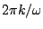
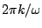
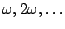
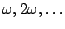

A sinusoid has a period (in samples) of
 where
where
 is the angular frequency. More generally, any sum of sinusoids
with frequencies
, for integers
is the angular frequency. More generally, any sum of sinusoids
with frequencies
, for integers  , will repeat after
, will repeat after
 samples.
Such a sum is called a Fourier Series:
samples.
Such a sum is called a Fourier Series:
The angular frequencies of the sinusoids above are all integer
multiples of  . They are called the
harmonics
of
. They are called the
harmonics
of  , which in turn is called the
fundamental. In terms of pitch, the harmonics
 are at intervals of 0, 1200, 1902, 2400, 2786,
3102, 3369, 3600, ..., cents above the fundamental; this sequence of pitches
is sometimes called the harmonic series. The first six of these are
all quite close to multiples of 100; in other words, the first six harmonics
of a pitch in the Western scale land close to (but not always exactly on) other
pitches of the same scale; the third and sixth miss only by 2 cents and the
fifth misses by 14.
, which in turn is called the
fundamental. In terms of pitch, the harmonics
 are at intervals of 0, 1200, 1902, 2400, 2786,
3102, 3369, 3600, ..., cents above the fundamental; this sequence of pitches
is sometimes called the harmonic series. The first six of these are
all quite close to multiples of 100; in other words, the first six harmonics
of a pitch in the Western scale land close to (but not always exactly on) other
pitches of the same scale; the third and sixth miss only by 2 cents and the
fifth misses by 14.
Put another way, the frequency ratio 3:2 (a perfect fifth in Western terminology) is almost exactly seven half-steps, 4:3 (a perfect fourth) is just as near to five half-steps, and the ratios 5:4 and 6:5 (perfect major and minor thirds) are fairly close to intervals of four and three half-steps, respectively.
A Fourier series (with only three terms) is shown in Figure 1.8. The first three graphs are of sinusoids, whose frequencies are in a 1:2:3 ratio. The common period is marked on the horizontal axis. Each sinusoid has a different amplitude and initial phase. The sum of the three, at bottom, is not a sinusoid, but it still maintains the periodicity shared by the three component sinusoids.
 |
Leaving questions of phase aside, we can use a bank of sinusoidal oscillators to synthesize periodic tones, or even to morph smoothly through a succession of periodic tones, by specifying the fundamental frequency and the (possibly time-varying) amplitudes of the partials. Figure 1.9 shows a block diagram for doing this.
This is an example of additive synthesis; more generally the term can be applied to networks in which the frequencies of the oscillators are independently controllable. The early days of computer music rang with the sound of additive synthesis.